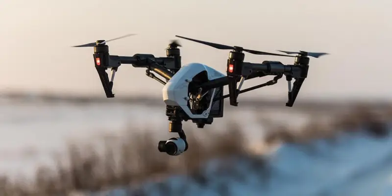
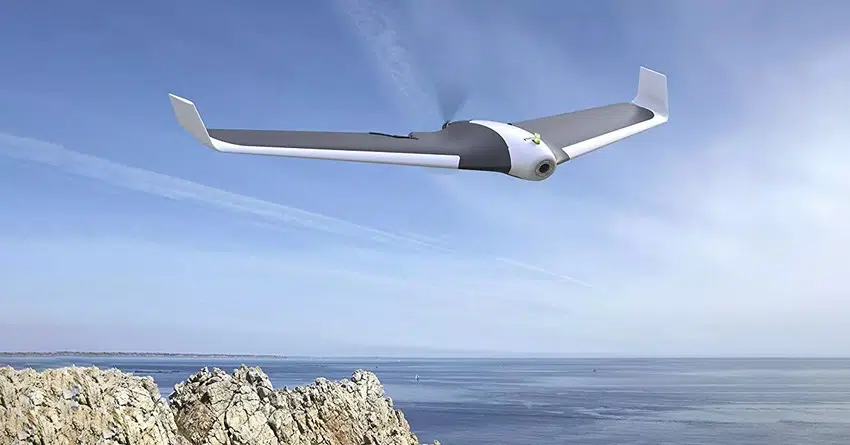
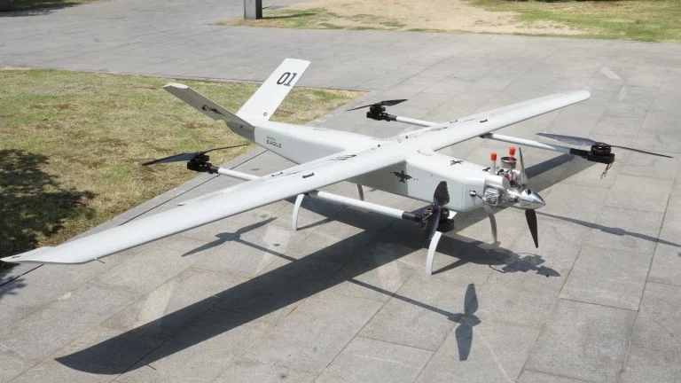
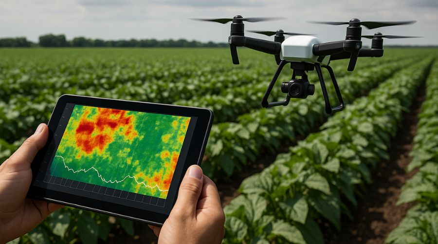
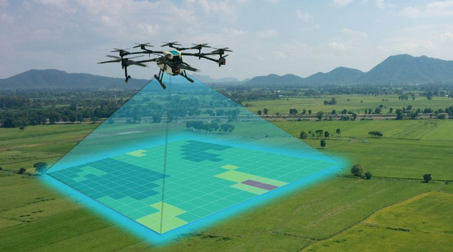
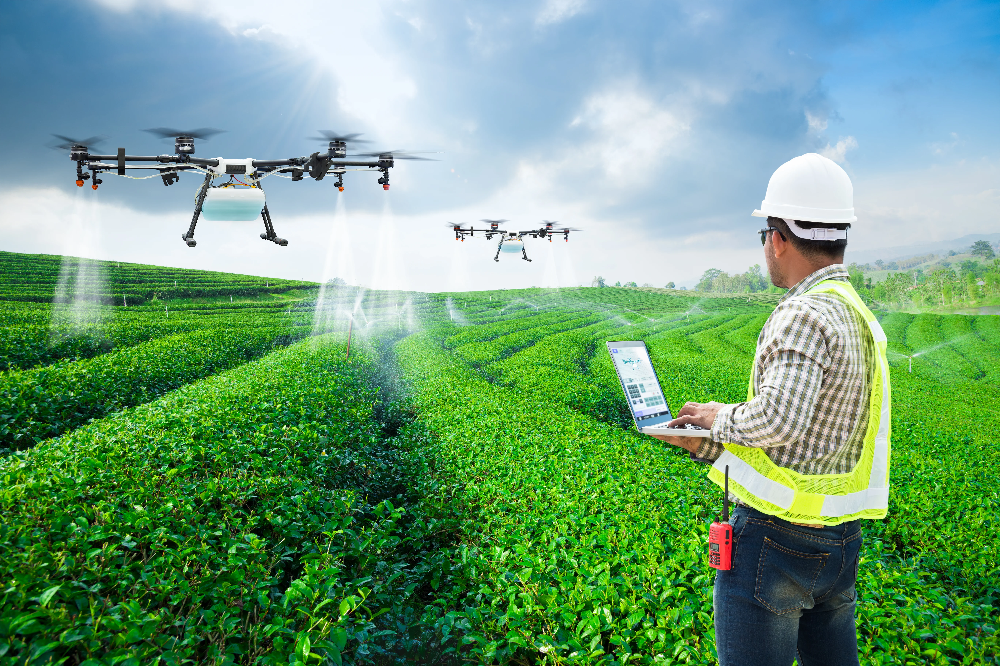
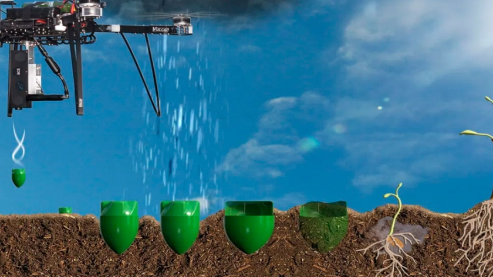
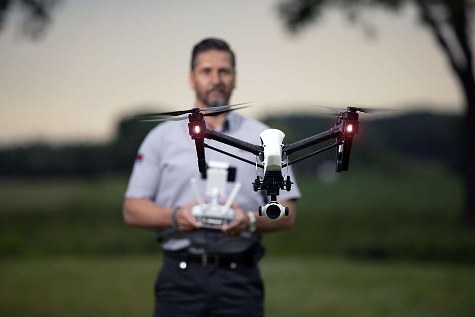

▸ Anteproyecto académico · Agricultura de Precisión
Tecnología inspirada en abejas, hormigas y aves para optimizar cultivos, ahorrar recursos y reducir el impacto ambiental.
Un UAV (Unmanned Aerial Vehicle) es un vehículo aéreo no tripulado controlado remotamente o programado para volar de forma autónoma. En la agricultura de precisión, actúa como plataforma de datos y acción.
Desde fotografía hasta fumigación localizada, los drones reemplazan métodos costosos e imprecisos con vuelos milimétricos guiados por GPS y sensores avanzados.

▸ Multirrotor · SK-62Vuelan verticalmente con excelente estabilidad. Ideales para monitoreo detallado y zonas pequeñas con obstáculos. Fácil operación y maniobrabilidad superior.
Más popular
▸ Ala Fija · Delair UX11Se asemejan a pequeños aviones. Abarcan grandes extensiones en poco tiempo con mayor velocidad. Requieren espacio de despegue y aterrizaje.
Gran alcance
▸ Híbrido · YFT-CZ35RCCombinan alas fijas y despegue vertical. Equilibran autonomía y precisión, siendo ideales para zonas amplias con múltiples obstáculos.
VersátilElige tu tarea agrícola y te recomendaremos el dron ideal.
| Tipo | Autonomía | Maniobrabilidad | Uso recomendado | Costo |
|---|---|---|---|---|
| 🚁 Multirrotor |
|
|
Fincas medianas, monitoreo puntual | 💵 Medio |
| ✈️ Ala Fija |
|
|
Grandes cultivos, mapas extensos | 💵💵 Alto |
| 🛸 Híbrido VTOL |
|
|
Zonas amplias con obstáculos | 💵💵 Alto |

Detectan enfermedades tempranas, identifican zonas con falta de agua o nutrientes y generan mapas 2D y 3D del estado del cultivo en tiempo real.
▸ Sensores RGB · Térmicos · NDVI
Generación de índices NDVI para medir vigor vegetativo, modelos topográficos del terreno y detección precisa de malezas y zonas degradadas.
▸ Fotogrametría · GIS · NDVI
Aplicación precisa y localizada de agroquímicos. Reduce el uso de agua y químicos hasta un 40% y minimiza el contacto humano con sustancias tóxicas.
▸ Boquillas · Depósitos · GPS RTK
Técnicas de dispersión controlada de semillas y bolas de semillas. Permite sembrar en zonas de difícil acceso con patrones de distribución optimizados.
▸ Dispersión controlada · Reforestación
Control perimetral automatizado y protección de cultivos contra intrusos, animales silvestres y vandalismo. Monitoreo nocturno con cámaras térmicas.
▸ Cámara IR · Patrullaje autónomoLa adopción de drones en agricultura reduce costos operativos, optimiza el uso de recursos hídricos y permite decisiones basadas en datos precisos.
Las abejas optimizan rutas de recolección con mínimo gasto energético. Los drones replican este comportamiento para planificar vuelos eficientes y detectar zonas del cultivo que requieren intervención, como ocurre con la polinización dirigida.
Las colonias de hormigas distribuyen recursos de forma descentralizada y eficiente. Las flotas de drones coordinados replican este modelo: cada unidad cubre una zona y comparte datos con las demás para optimizar la cobertura del cultivo.
Las aves rapaces planean con mínimo gasto energético mientras monitoran grandes extensiones. Este principio inspiró el diseño de drones de ala fija, que aprovechan la sustentación aerodinámica para cubrir cientos de hectáreas en un solo vuelo.
"Los drones no son solo herramientas tecnológicas, sino sistemas inspirados en principios biológicos optimizados por millones de años de evolución: eficiencia energética, cooperación y adaptación al entorno."
Haz clic en cada ítem para marcarlo como completado. Lista interactiva de verificación pre/durante/post vuelo.